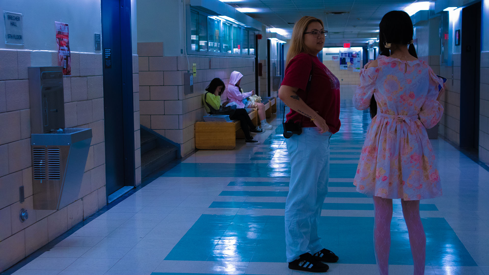
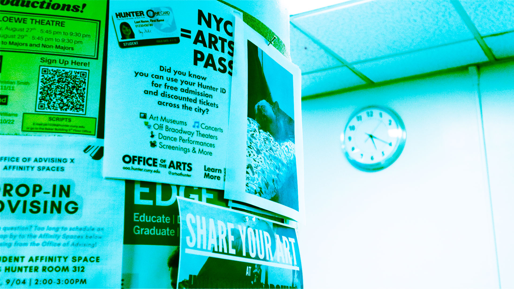

Homework 2
Image 1

Image 2

Go to homepage
For this photo I used a very saturating cyan/blue-green filter, which gives the whole scene a cold, strong, and almost monochromatic look. This filter makes the bright white papers turn riotous blue-green, which changes the original colors a lot.